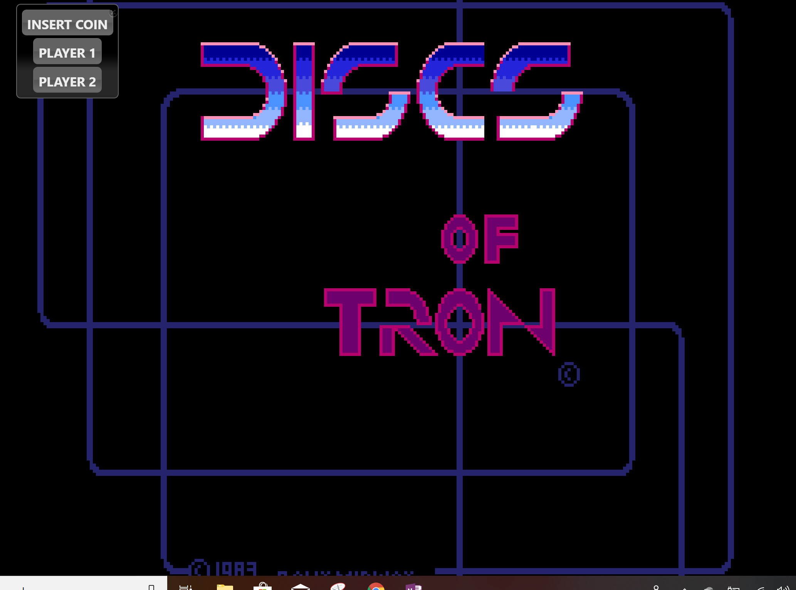
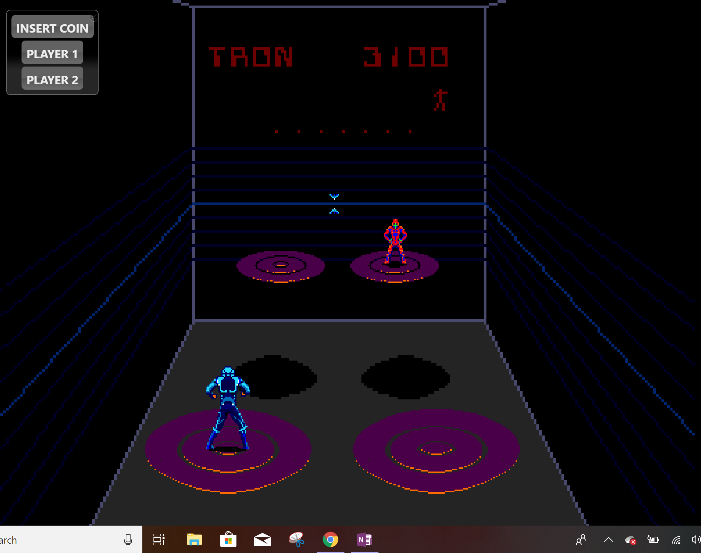

humanhybrids blog
Tron Classic Arcade Emulator
I went to https://archive.org/details/internetarcade and of course had to find a Tron game to play. I found the original Tron arcade classic but there were numerous issues that made it very difficult to play on an emulator so I found Discs of Tron to play instead. It was easy to play since there were directions given on the page about what keys control the game and the directions on the game screen explained the objective of the game. I was a program in the Tron games fighting for my life in the disc game. I was standing on a platform (in the game) and threw my identity disc at the opponent trying to hit them and knock them down. The discs can bounce off the walls in another way to try to hit you. I managed to beat my opponent during the first round which advanced me to a new room with two platforms. Sadly, I haven’t been able to win that round yet. I managed to score one of the top ten scores on the board so they let me put my initials in just like a real arcade machine.
I am glad that I have found a way to play a Tron game on my computer but it is definitely more fun to play a Tron game on an arcade. There is an arcade on the Santa Cruz boardwalk that had an original Tron arcade. My husband, Cory, and I look forward to playing that game every time we go to Santa Cruz. There's something special about playing the game the way it is intended. Hardware and software seem to work together seamlessly. Putting in the coin makes it even better because that clink sound makes the game come to life. Unfortunately most places, including the Santa Cruz arcade, replaced the coins operated system with a digital card reader. But luckily my husband and I were able to play a coin-operated Tron game at Flynn's arcade in Disney California as part of the Tron Legacy promotion. Playing the game the way it is intended allows the player to better immerse themselves into the game.